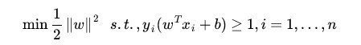
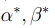
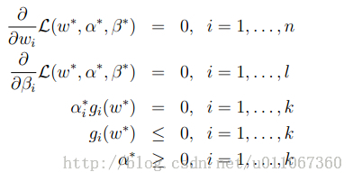
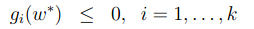
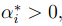
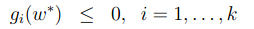
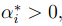

支持向量机(SVM)（二）-- 拉格朗日对偶（Lagrange duality）
简介：
1、在之前我们把要寻找最优的分割超平面的问题转化为带有一系列不等式约束的优化问题。这个最优化问题被称作原问题。我们不会直接解它，而是把它转化为对偶问题进行解决。
2、为了使问题变得易于处理，我们的方法是把目标函数和约束全部融入一个新的函数，为了使问题变得易于处理，我们的方法是把目标函数和约束全部融入一个新的函数，即拉格朗日函数，再通过这个函数来寻找最优点。即拉格朗日函数，再通过这个函数来寻找最优点。
3、约束条件可以分成不等式约束条件和等式约束条件，只有等式约束条件的问题我们在高等数学课程中已经学习过了，其解决方法是直接将等式约束加入原问题构造出拉格朗日函数，然后求导即可。现在考虑更加一般性的问题：带不等式约束和等式约束的极值问题如何构造拉格朗日函数求解。 学习拉格朗日对偶原理重要的是理解构造所得的原始问题和原函数的等价性，以及原始问题和对偶问题解得等价性。
回忆一下之前得到的目标函数

要求解这个式子。我们可以通过求解对偶问题得到最优解，这就是线性可分条件下支持向量机的对偶算法，这样做的优点在于：一者对偶问题往往更容易求解；二者可以自然的引入核函数，进而推广到非线性分类问题。
1、我们下看下面的一个式子
上面是要求解的目标函数及其条件。我们可以得到拉格朗日公式为
在这里被称为拉格朗日算子。
然后分别对w和求偏导，使得偏导数等于0，然后解出和；
下面我们将要产生一个既有等式又有不等式条件限制的式子，我们可以叫做原始优化问题，这里简单介绍下拉格朗日对偶的原理。如下式子：
上述式子有两个条件（等式条件和不等式条件）
由此我们定义一般化的拉格朗日公式
这里的和都是拉格朗日算子。不要忘了我们求解的是最小值。
设如下等式：
这里的P代表primal。我们设如下约束条件（primal constraints）：
如果条件不全部满足的话，我们总可以调整和使最大值出现正无穷，即会出现下面情况：
因此我们可以得出如下式子：

这样我们原来要求的min f(w)可以转换成求了。
同时我们设
 将问题转化为先求拉格朗日关于的最小值，这个时候就把和看做常量。之后再求最大值。
将问题转化为先求拉格朗日关于的最小值，这个时候就把和看做常量。之后再求最大值。
如下：
这个问题就是原问题的对偶问题，相对于原问题只是更换了min和max的顺序，而一般更换顺序的结果是Max Min(X) <= Min Max(X)。然而在这里两者相等。由此我们可以设如下：

所以在一定的条件下我们可以得到：

因此我们可以解决原问题的对偶问题，但是我们还要看看条件是什么。
假设f和g都是凸函数，h是仿射的(仿射的含义：存在ai, bi，使得，并且还要满足存在w使得所有的i都有；
有了以上的假设，那么一定会存在使得是原问题的解，是对偶问题的解。同时也满足
另外，还满足Karush-Kuhn-Tucker（ KKT condition），如下式子：

所以如果满足了KKT条件，那么他们就是原问题和对偶问题的解。
我们从式子 和式子可以看出如果那么
和式子可以看出如果那么 ，
，
这个也就说明时，w处于可行域的边界上，这时才是起作用的约束。
而其他位于可行域内部的（）点都是不起作用的约束，其中也就是 的时候。这个KKT双重补足条件会用来解释支持向量和SMO的收敛测试。
的时候。这个KKT双重补足条件会用来解释支持向量和SMO的收敛测试。